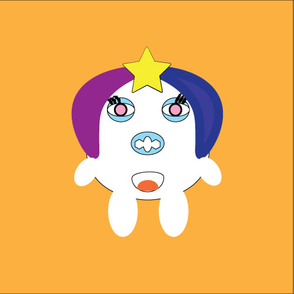
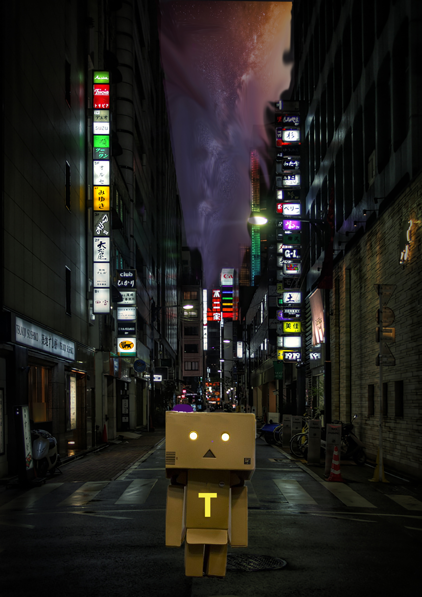
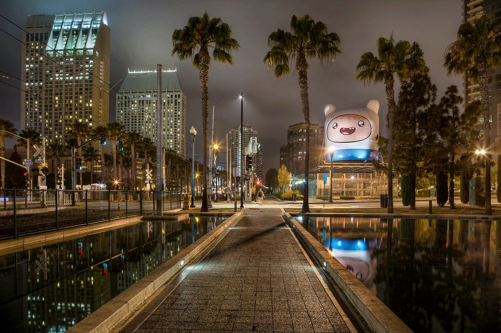

My character’s name is called Yami and she wears a wig as a disguise. This is the point I wanted to show as I created her with a short wig which is parted in the middle with the purple and blue colors combined. The big star on the head makes her look stood out, just like how Wonder Woman’s costume includes the headpiece which could also be used as a weapon. The same can be done with this star headpiece of Yami. Therefore, Wonder Woman is one of my inspirations. She has the big blue eyes with pink irises, the sharpest gaze of which could make her target’s knees tremble once they are met with these eyes. Another inspiration comes from the video game called ‘Pou’ where the character of it has the similar shape as Yami. I wanted to make it look cute, but at the same time, I created it with many abilities it could use. Because of the egg-shaped body of the character, she could use herself to roll around in a fast pace while engaging in a fight with the enemy. During the refining of the character, I decided to change the nose shape of it in order to make it look like that of piggies. Besides that, I used the pathfinder merging tool to refine the hands and legs. I would say that the most challenging part of the project is processing how I could express and create the character in my imagination perfectly. It’s especially challenging since the tools I have to use in creating it is limited. Even though the look of the character on my mind, which has the look of a goddess, is completely different from this, I think I ended up creating the cute version of it.
Three images have been chosen in creating this photo. In fact, I want to use this opportunity to introduce an important character which is almost always beside the main character of my project. It's a little cute robot whose role is a friend, advisor as well as a partner in crime for the main character. My inspiration for this work could be said to have derived from the danbo robot, the expression of which is mainly that of the clueless one which is entertaining. Its name is T which is symobolized on its chest area and it accompanied the main character, Yami on her missions. When photoshopping this image, the most challenging part for me was replacing more noticeable sky between the buildings. I found it relatively complicated and felt at a loss of how to make the sky as realistic as possible over the background. However, I managed to fix it considerably well by using multiple tools such as blending tool, stamp tool, brush, eraser etc. Now, it could be considered that the background of Yami has been concluded as the city girl whose origin is from Tokyo, Japan.
I created this piece in an imaginative sense where it’s both lively and melancholic at the same time. At the beginning of the piece, it starts with the lively drum and beat sounds, accompanied by the walking footsteps. I imagine this part of the piece as the character walking in the rain calmly, yet with a definite purposeful mind as if she is on a mission. Then, the song cuts off, the pattering sound of the rain becomes more distinct before the melancholic tune of the piano comes out. This is where she listens to her favorite genre of music which keeps her calm as mentioned in the character analysis. I combined 5 different audio sounds with a studio fade out effect. I would say the most challenging part of the project was not knowing how to create despite knowing exactly what I want to create. There were a few technical problems since I don’t know where to find the tools I want. Nonetheless, this can be mastered by learning about the application further.
Soundcloud LinkWhen animating my character Yami, I followed the examples of the storyboard I created which is her running towards the screen, along with her changing facial expressions per frame to frame. As she comes towards the screen, she performs her signature attack move. She grabs the star-shaped weapon from her forehead and uses it as one of the explosion kind. I chose the bright night street view as the background in order to give clear spotlight to the character and as for the timing, I took a suitably different approach between each frame. I would say that the most challenging part of the project is the preciseness in the arrangement of the layers and the unfamiliarity with the tools which could be improved with a bit more practice. Nonetheless, I managed to figure things out as I worked on it carefully.
Asides from using its body as a weapon, my character, Yami mainly focuses on shooting out the circle-shaped and square-shaped objects through its hands as if they are the guns. Therefore, I used the ellipse function along with rect function. The colors such as soft pink, nude and purple showcase the vibrant and lively vibe the character possesses. So, it also applies to its power in which the objects have different colors. The users can move their mouse around to see the character’s name following their movement, as well as how the objects are shot, emphasized by the purple boxes which act as both the emphasis and the obstacles the objects have to pass through. The most challenging part of the project is basically about producing ideas on how to express the character’s power. Nonetheless, I solved it using simple codes.
Programming Project Link